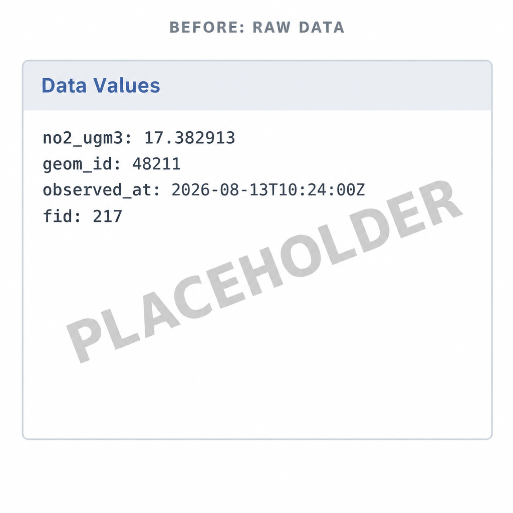
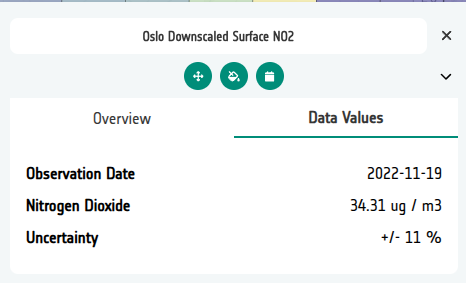

Data Values (vector)¶
When a user clicks a vector feature in the Geospatial Explorer — a country polygon, a monitoring site, a building footprint — the Data Values panel lists that feature's properties. What it shows there is entirely up to you.

Left unconfigured, the panel presents the data exactly as it is stored: raw
property names (no2_ugm3), full-precision numbers (17.382913), ISO
timestamps, and internal fields like fid or geom_id that mean nothing to
a reader. That is faithful, but not friendly — and the Explorer has no way
of knowing what your data means or how you would like it presented.
The Configuration Builder lets you customise the display so the same feature reads like this instead:

What you can change¶
Each field of a vector data source can be configured independently:
| Option | What it does |
|---|---|
| Display label | Replaces the raw property name with a prettier version, e.g. no2_ugm3 → NO₂. |
| Prefix / Suffix | Adds text before or after the value — units (µg/m³, %, °C), qualifiers (≈), anything the value needs for context. |
| Precision | Rounds numeric values to a fixed number of decimal places (e.g. 17.382913 → 17.4). |
| Type | Marks a field as Date or DateTime so the timestamp is formatted for reading rather than shown as raw ISO 8601. |
| Display order | Controls the sequence the fields appear in the panel — set by arranging the rows in the fields editor. |
| Hide | Removes a field from the panel entirely — ideal for internal IDs, geometry references and other noise. A hidden field stays in the config (stored as null), so unhiding it later restores everything. |
Styling is separate
Data Values controls what users read when they query a feature. How features look on the map — colours, strokes, interpolation — is Vector styling.
How it's done¶
In the Configuration Builder, open the layer card for a vector layer (GeoJSON, FlatGeoBuf or WFS) and open the Manage Fields editor. Fields can be populated automatically from the source file with Populate field details — if the layer has several vector files, a searchable picker lets you choose which one to read the fields from — and existing field settings can be copied from another layer with Copy from layer.
The editor presents one row per field:
- Field name — the property name in the data, shown in monospace.
- Display label, Prefix, Suffix — inline text inputs for the readout.
- Precision — decimal places for numeric values.
- Type —
default,DateorDateTime. - Hide — a toggle; hidden rows stay in the table, greyed out.
- Rows are arranged with the drag handle or the up/down chevrons, and that order becomes the display order in the Explorer.
Where the settings live¶
Field settings are stored on the data source under meta.fields, keyed by
the raw property name. A string is all it takes for a simple rename; an
object carries the full configuration, and null hides the field:
"meta": {
"fields": {
"no2_ugm3": { "label": "NO₂", "suffix": " µg/m³", "precision": 1, "order": 1 },
"observed_at": { "label": "Observed", "type": "date", "format": "dd MMMM yyyy, HH:mm", "order": 2 },
"geom_id": null,
"fid": null
}
}
Because the settings live in the config, they travel with import, export and JSON editing like everything else.
Related¶
- Vector styling — how features look on the map
- Standard layers — where vector layers are configured